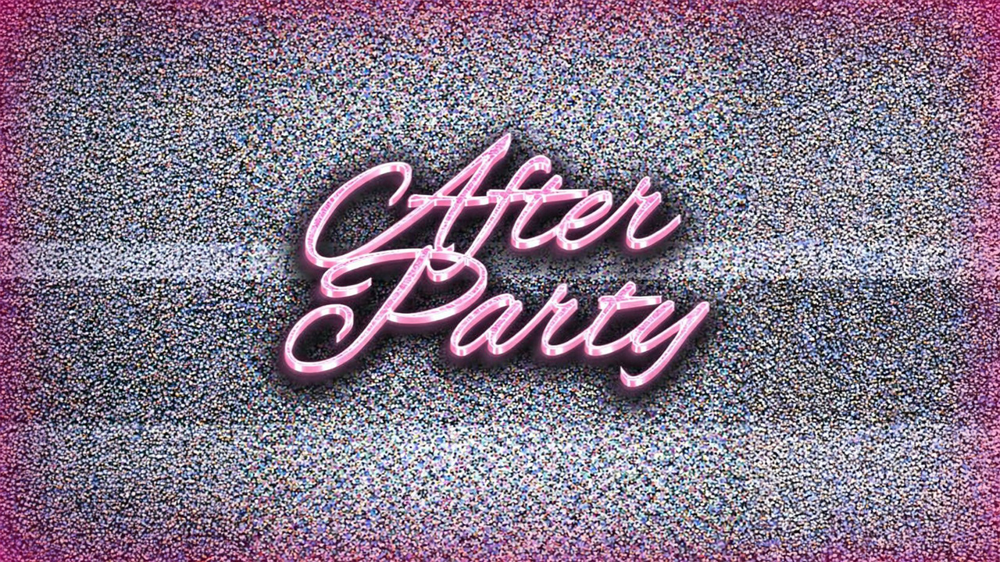

Editor / Creator / Designer
Raw material in.
Anything
Four years in the creator editing space cutting long-form like podcasts, vlogs, shows, and the short-form that comes out of them. I design the thumbnails, titles, and graphics that carry it, keeping brand consistency across everything.
01 / Selected work
Editing and design
Long-form podcast episodes, vlogs, brand launch pieces, the short-form cut out of them, and the channel it all lives on. Every thumbnail you see is one I designed.

Podcast episode
Full episode cut, from ingest through audio cleanup, color, and delivery.

The After Party clips
The most engaging moments from The After Party podcast, cut and built for short-form.
Brand intro
Animated clothing brand logo - modelled and animated in Blender - with the sound design to match.

Makeup launch
Behind the scene coverage of a product launch.

Comedy edit
Heavier editing throughout. Graphics, memes, and sound effects cut for comedic timing.

Full channel
If you want to see more of the work!
02 / What I handle
Everything (literally)
From raw footage, to editing your videos, to managing your socials - I can handle all of it. As much or as little as you'd like.
Post-production
Multicam assembly, pacing and structure, color, keying, B-roll, transitions, final delivery to platform spec.
Sound
Dialogue editing, cleanup, sound sync across multiple mics, mix balance, sound design.
Graphics
Thumbnails, titles and text treatments, animated intros and transitions, logo animation, social assets.
Software
Final Cut Pro, Adobe Premiere Pro, CapCut, Adobe Photoshop, Adobe Illustrator, InDesign, Blender.
03 / Contact
Try me first!
No strings attached.
Looking at someone else's work and deciding whether they can match your style is hard, and I get it. Shoot me a message and tell me what you're after, or send something of yours over and I'll edit a complimentary piece so you can see exactly how I'd handle it before committing to anything.